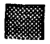
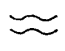

Trabajador C
- Día 55 (viernes 31 de marzo): El Paciente C regresó a su casa en San Salvador.
- Día 58 (lunes 3 de abril): El Paciente C estuvo bajo observación ambulatoria por parte del ISSS.
- Estado general: Excepto por los efectos residuales pero menos evidentes en su pie izquierdo, el pronóstico para su recuperación completa es bueno.
- Día 199 (martes 22 de agosto): El Paciente C regresó a su trabajo en la planta.
- Día 220 (martes 12 de septiembre): El Paciente C comenzó fisioterapia para su pie izquierdo.


Descamación seca

Alopecia por radiación